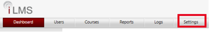
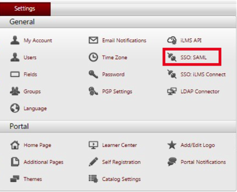
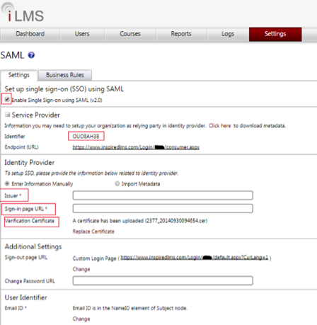
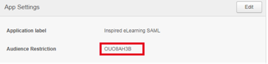

This setup might fail without parameter values that are customized for your organization. Please use the Okta Administrator Dashboard to add an application and view the values that are specific for your organization.
- Sign into InspiredLMS as an administrator.
- Select Settings from the top menu, as shown below.

- Select SSO:SAML from the list that appears, as shown below.

- Check Enable Single Sign-on using SAML (v2.0), as shown below.
-
Copy the following data into the Issuer field, as shown below.
Sign in to the Okta Admin dashboard to generate this value.
-
Copy the following data into the Sign-in page URL field, as shown below.
Sign into the Okta Admin dashboard to generate this value.
- Select the following link to download a Verification Certificate. After it is downloaded, attach it as instructed, as shown below.
Sign in to the Okta Admin dashboard to generate this value.
- Copy the Identifer in the Service Provider section, as shown below.

- On the Okta dashboard for the InspiredLMS app, paste Identifer you copied in step 8, into the Audience Restriction field, as shown below.

Note: IdP-initiated and SP-initiated flows are supported.
For SP-initiated SSO, go to https://www.inspiredlms.com/Login/<your_company_name>/consumer.aspx where <your_company_name> is your iLMS domain.